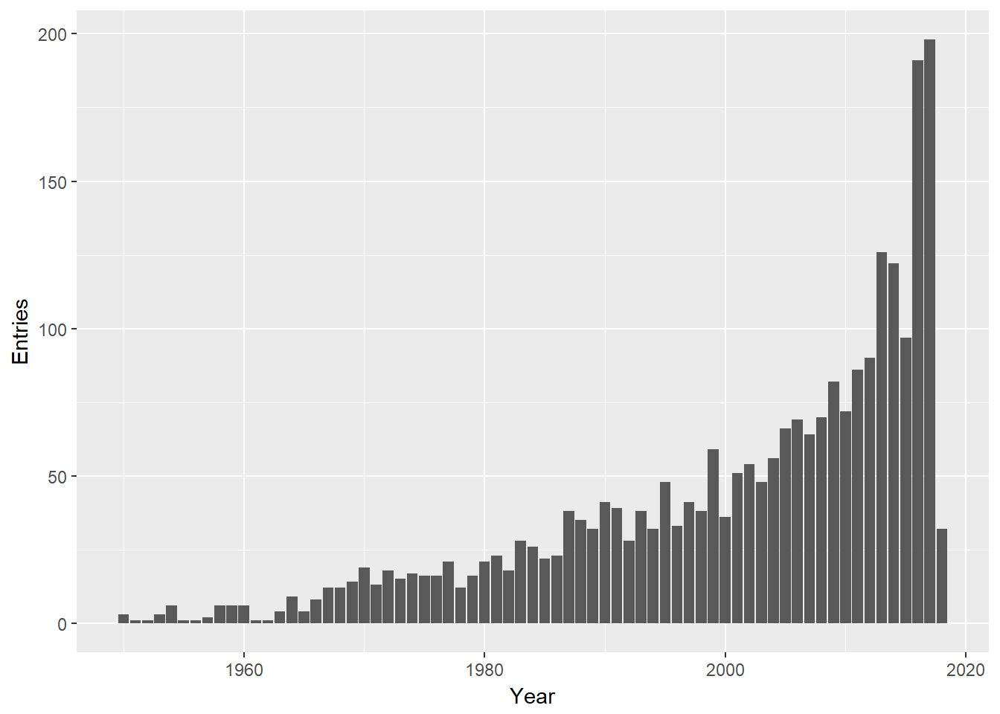
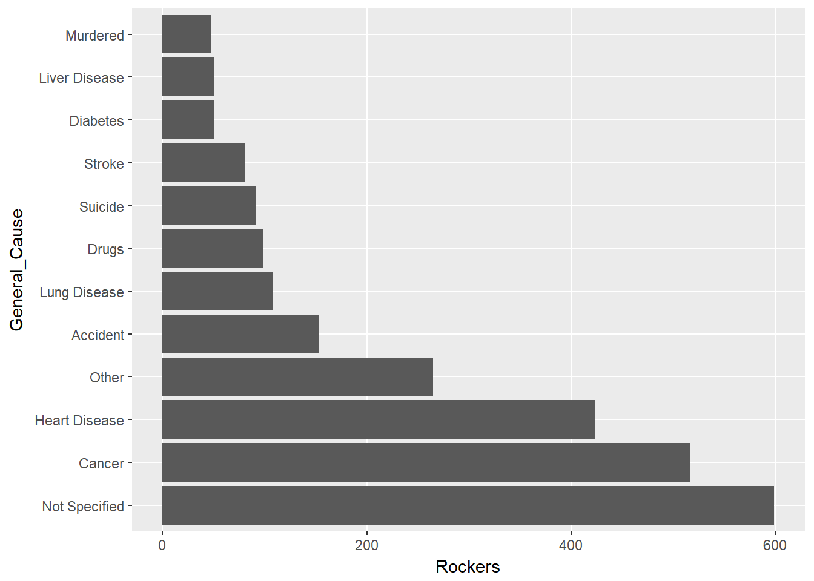
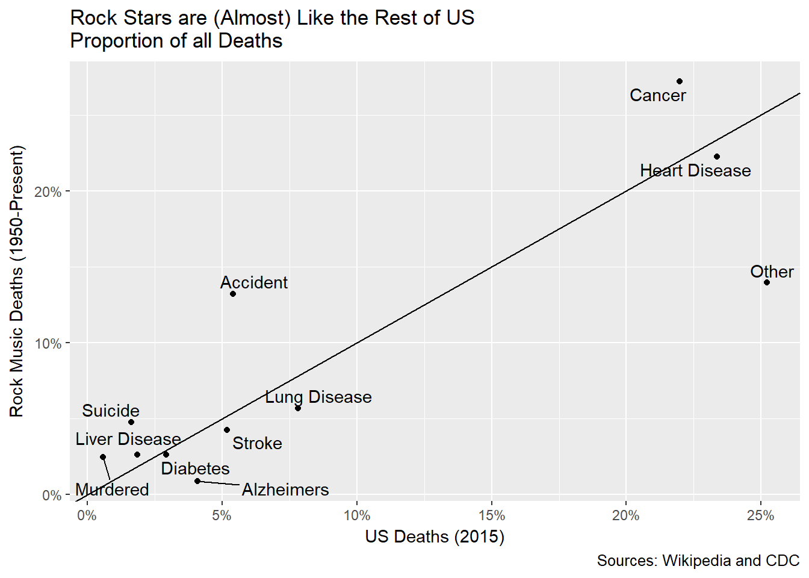
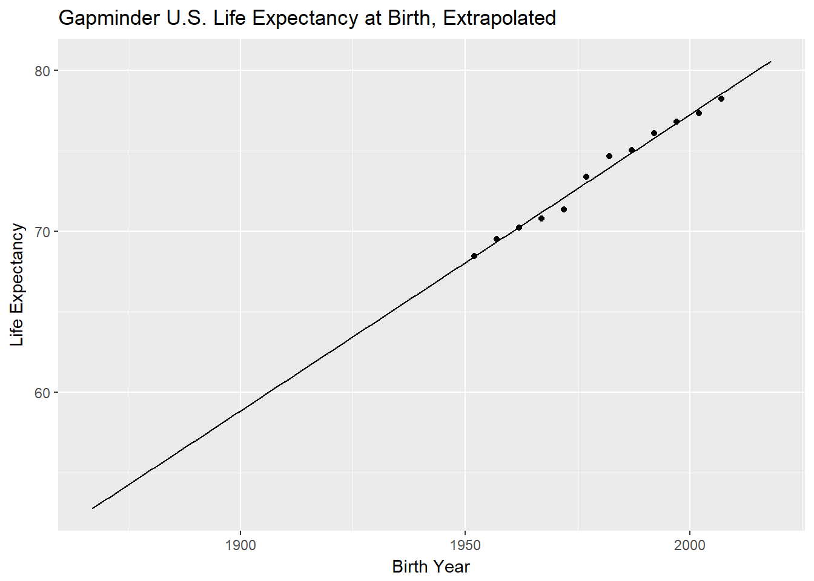
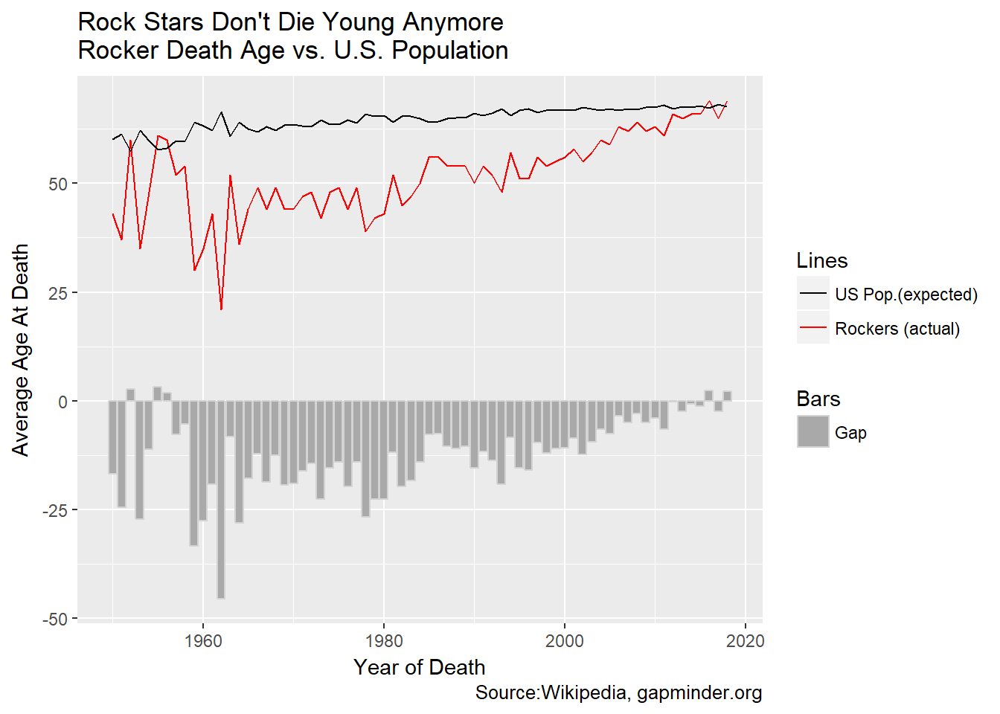
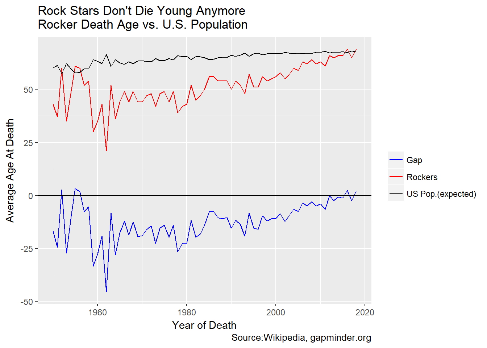
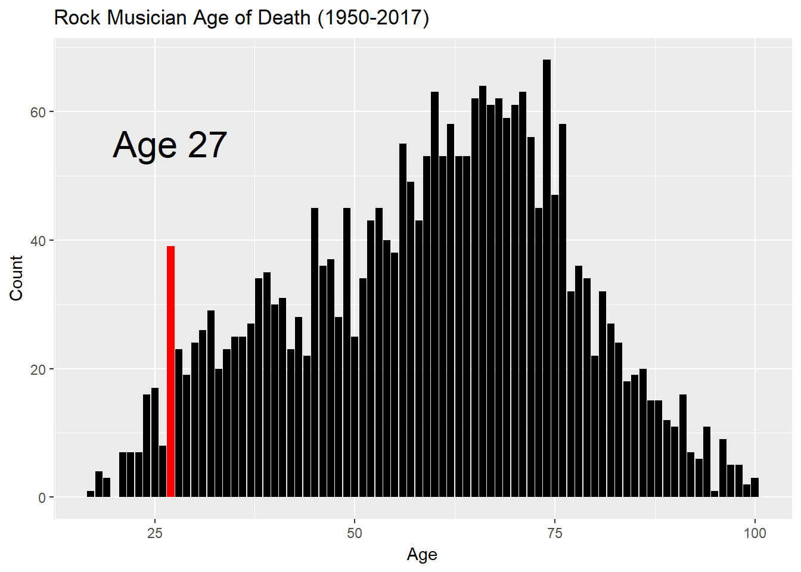
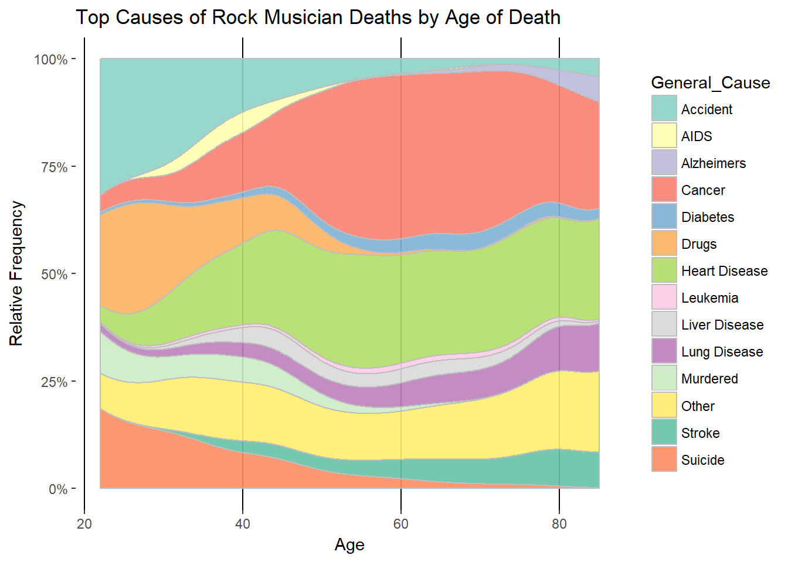
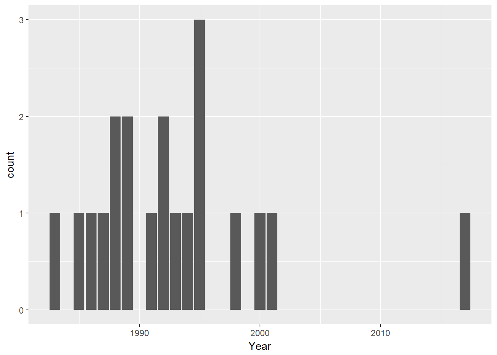
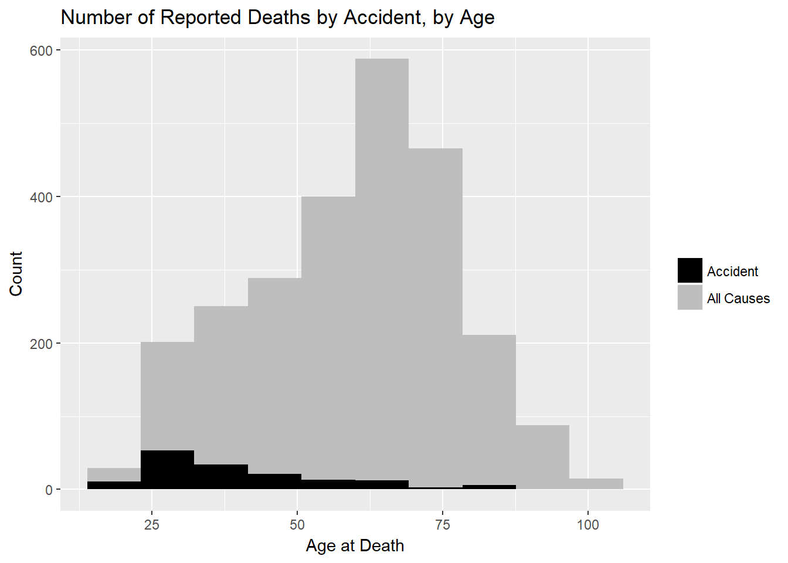

Live Fast, Die Young, Stay Pretty?
Analyzing deaths of rock musicians
Live fast, die young, stay pretty? That’s the stereotype for rockers, or it was. We only need to look at Keith Richards, over 70 and going strong, to find a major counterexample. Do rockers die young? What do they die of? How does that compare to the broader population (in the U.S., anyway). It turns out there are some suprising answers to those questions.
Along the way we’ll learn something about web scraping, html parsing and some ggplot2 tricks. We use the tidyverse dialect throughout, just so you know.
Load libraries and do some setup.
Note the mutate_cond function in the chunk below. We’ll use it later.
library(ggplot2)
library(stringr)
library(tidyverse)
library(lubridate)
library(rvest)
library(ggrepel)
library(gapminder)
library(knitr)
library(RColorBrewer)
# function to mutate only rows meeting a certain condition
# most useful enhancement to dplyr ever!
# I load this in all my projects.
mutate_cond <- function(.data, condition, ..., envir = parent.frame()) {
#ref: https://stackoverflow.com/questions/34096162/dplyr-mutate-replace-on-a-subset-of-rows
condition <- eval(substitute(condition), .data, envir)
condition[is.na(condition)] = FALSE
.data[condition, ] <- .data[condition, ] %>% mutate(...)
.data
}Load tables from Wikipedia.
Wikipedia maintains a table of deaths in rock which will be our primary source. All the usual Wikipedia caveats apply plus some more. The people included in this table are whoever the posters want to include. Few are rock “stars.” Many are producers, agents, roadies and the like. But hey, they are all in the life, right? There are errors in spelling and place names. Since this is a recreational excercise, I did not spend time validating the entries.
The deaths for 2010 and later are in a separate article so we need to get both. When I started this project they were on one page. By the time you read this the Wikipedia gods may have changed it again. Beware.
death_page1<-read_html("https://en.wikipedia.org/wiki/List_of_deaths_in_rock_and_roll")
write_html(death_page1,file="death_page1.html")
death_page2<-read_html("https://en.wikipedia.org/wiki/List_of_2010s_deaths_in_rock_and_roll")
write_html(death_page2,file="death_page2.html")A note on “pointers.”
R and the rvest package have some great functions for converting html <table>s into data frames. rvest is a very powerful package but one thing I learned is that it works with pointers to the data rather than the actual data. C programmers and old geezers like me will be familiar with this. I remember pop and push and stacks and all that stuff from the old days. R generally doesn’t pass values “by reference.” It passes “by value.” That’s why when you modify data in the scope of a function it doesn’t affect the value of the data outside unless you assign it with return <data>. Using pointers in rvest functions means modifications to html data happen without an explicit assigment.
Consider a trival example:
#usual R behavior
my_function<- function(x){return (x+1)}
data=3
`#this doesn't change data but it would if data was passed by reference
my_function(data)
`# [1] 4
data
`# [1] 3
`#this does change data in the usual R way
data<-my_function(data)
data
`# [1] 4
If we were passing values “by reference” my_function(data) would change data without the need to assign it back to data. That’s how rvest works.
We use this behavior to combine the tables in the two Wikipedia articles into one html page by extracting the tables in the second wiki article and making them xml siblings of the tables in the first.
Alternatively, we could load the two pages, extract the tables separately and combine them later but this is trickier!
#join pre-2010 to post 2010
death_page<-death_page1
death_page_child<-death_page1 %>% xml_children() %>% .[2]
death_page2_child<-death_page2 %>% xml_children() %>% .[2]
#create one big web page by adding all the first level children from the second
#page to the first.
#This modifies death_page by changing the list of pointers associated with it.
xml_add_sibling(death_page_child,death_page2_child)
write_html(death_page,file="death_page.html")Clean the data.
Unfortunately, as is often the case, the raw data is not as clean as we might like.
Here’s a data wrastlin’ puzzle. The artist and the band name (or names) share a single table cell. This is not a problem for the anonymous summary stats we will present here but I am also doing another analysis where I look at radio station playlist patterns do detect deaths (the subject of a future post). For that we need to flag the event by band or artist, however it appears. Let’s tackle it now.
Parsing HTML is a dark art and I would not rise to the level of sorcerer’s apprentice. The clue that will let us separate the two (or more) identifiers is that the band is encased in a <small><> tag within the <tr><> tag that html_table looks for. Extracting the just the text from the cell concatenates the two items without a separator. The rvest functions won’t help this noob here. I chose to do old-school raw text editing with search/replace to break the person and the band into separate columns. So instead of <td>Person<small>Band,Band<><> we want to have <td>Person,Band,band<>. This way we can separate out band names later.
#Crude hack follows
# read it in as a raw text file and edit the tags
# to break the artist name and band names into comma-separated list
# by replacing '<small>' with ','.
death_page_text<-read_file("death_page.html")
death_page_text<- gsub( "<small>", ", ", death_page_text )
death_page_text<- gsub( "</small>", "", death_page_text )
write_file(death_page_text,"death_page2.html")
A further wrinkle is some of the age-at-death numbers are given as a range like “45-46” which causes html_table to create a character column for Age. Tables that don’t have any ranges, just single numbers, will be extracted as numeric columns. We have many tables so We want to use bind_rows to combine all the web page tables into one data frame. Alas, bind_rows will balk at chaining columns of diferent types. To avoid this, let’s arbitrarily take the lowest number in any age range we find before binding. We can do this as part of the table extraction process.
Also omit the first five tables which, by inspection, we know are not the mortality tables.
# omit first five tables
deaths_raw<-read_html("death_page2.html") %>%
html_nodes("table") %>%
.[5:length(.)] %>%
html_table(fill=TRUE) %>%
lapply(function(x){mutate(x,Age=as.integer(str_extract(as.character(Age),"[0-9]+")))}) %>%
bind_rows() %>%
as_data_frame() %>%
{.}
deaths_raw[1:5,] %>% kable(format.args=list(big.mark=","))| Name | Age | Date | Location | Cause of death |
|---|---|---|---|---|
| Kansas Joe McCoy, Harlem Hamfats | 44 | January 28, 1950 | Chicago, Illinois, USA | Heart disease[1] |
| Bertha Hill | 45 | May 7, 1950 | New York City, New York, USA | Hit and run accident[2] |
| Papa Charlie McCoy, Harlem Hamfats | 41 | July 26, 1950 | Chicago, Illinois, USA | Paralytic brain disease[1] |
| Cecil Gant | 37 | February 4, 1951 | Nashville, Tennessee, USA | Pneumonia and heart attack[3] |
| Luke Jordan | 60 | June 25, 1952 | Lynchburg, Virginia, USA | [4] |
…and so on.
Almost done with the boring bits. Separate out the list of name and bands into, at most, four bands. Turn the date string into a POSIX-style date. Replace the empty causes with “Not Specified.” Finally, strip the footnote numbers out of the file.
#take at most three band names.
deaths<-deaths_raw %>%
separate(Name,into=c("Name","band1","band2","band3","band4"),sep=",",extra="drop") %>%
unique()
deaths<-deaths %>%
mutate(Date=parse_date(Date,"%B %d, %Y")) %>%
filter(!is.na(Date))
#remove footnotes and change empty causes to "Not Specified"
deaths<-deaths %>% mutate(`Cause of death`=str_replace(`Cause of death`,"\\[[0-9,]+\\]",""))
deaths<-deaths %>% mutate_cond(is.na(`Cause of death`),`Cause of death`="Not Specified")
deaths<-deaths %>% mutate_cond(`Cause of death`=="",`Cause of death`="Not Specified")
deaths[1:5,]%>% kable(format.args=list(big.mark=","))| Name | band1 | band2 | band3 | band4 | Age | Date | Location | Cause of death |
|---|---|---|---|---|---|---|---|---|
| Kansas Joe McCoy | Harlem Hamfats | NA | NA | NA | 44 | 1950-01-28 | Chicago, Illinois, USA | Heart disease |
| Bertha Hill | NA | NA | NA | NA | 45 | 1950-05-07 | New York City, New York, USA | Hit and run accident |
| Papa Charlie McCoy | Harlem Hamfats | NA | NA | NA | 41 | 1950-07-26 | Chicago, Illinois, USA | Paralytic brain disease |
| Cecil Gant | NA | NA | NA | NA | 37 | 1951-02-04 | Nashville, Tennessee, USA | Pneumonia and heart attack |
| Luke Jordan | NA | NA | NA | NA | 60 | 1952-06-25 | Lynchburg, Virginia, USA | Not Specified |
Another Caveat
Now we have a clean table. Before going further we should note that death entries are growing over time. No great surprises here but but note that the in the early days of rock there were were few old rockers. We should keep this in the back of our mind as we proceed.
deaths<-deaths %>% mutate(Year=year(Date))
deaths %>%
group_by(Year) %>%
summarise(Entries=n()) %>%
ggplot(aes(Year,Entries))+geom_col()
Common causes of Death
Let’s do a quick exploration to see if we are satisfied with the features of our data set.
#what are common causes of death
cause_table<-deaths %>%
group_by(`Cause of death`) %>%
summarize(Cause=n()) %>%
arrange(desc(Cause))
cause_table[1:11,]%>% kable(format.args=list(big.mark=","))| Cause of death | Cause |
|---|---|
| Not Specified | 599 |
| Heart attack | 240 |
| Cancer | 165 |
| Lung cancer | 104 |
| Traffic accident | 78 |
| Drug overdose | 74 |
| Heart failure | 74 |
| Stroke | 59 |
| Natural causes | 48 |
| Pneumonia | 48 |
| Suicide | 41 |
Looking through the table we see that many causes can be generalized. Let’s aggregate a bit. We are making some choices here. For instance, I call any cause containing the words “heart” or “cardiac” as “heart disease.” I count alcohol as a drug. Where multiple terms exist, drugs trump accidents. Suicide trumps everthing but cancer. Cancer trumps everthing. Note the use of the very handy mutate_cond function.
#add a new column "general cause"
deaths<-deaths %>% mutate(General_Cause=`Cause of death`)
deaths<-deaths %>%
mutate_cond(str_detect(tolower(`Cause of death`),
"accident|fall|hit|crash|fire|poison"),General_Cause="Accident")
deaths<-deaths %>%
mutate_cond(str_detect(tolower(`Cause of death`),
"drug|overdose|alcohol"),General_Cause="Drugs")
deaths<-deaths %>%
mutate_cond(str_detect(tolower(`Cause of death`),"asphyxiation"),
General_Cause="Asphyxiation")
deaths<-deaths %>%
mutate_cond(str_detect(tolower(`Cause of death`),"shot|shoot|murder|stab|gun|knife"),
General_Cause="Murdered")
deaths<-deaths %>%
mutate_cond(str_detect(tolower(`Cause of death`),
"heart|cardi|coronary"),General_Cause="Heart Disease")
deaths<-deaths %>%
mutate_cond(str_detect(tolower(`Cause of death`),"aids|hiv"),General_Cause="AIDS")
deaths<-deaths %>%
mutate_cond(str_detect(tolower(`Cause of death`),
"diabetes|diabetic"),General_Cause="Diabetes")
deaths<-deaths %>%
mutate_cond(str_detect(tolower(`Cause of death`),
"pneumonia|emphysema|respiratory"),General_Cause="Lung Disease")
deaths<-deaths %>%
mutate_cond(str_detect(tolower(`Cause of death`),
"cirrhosis|neph|liver"),General_Cause="Liver Disease")
deaths<-deaths %>%
mutate_cond(str_detect(tolower(`Cause of death`),
"stroke"),General_Cause="Stroke")
deaths<-deaths %>%
mutate_cond(str_detect(tolower(`Cause of death`),
"alzh"),General_Cause="Alzheimers")
deaths<-deaths %>%
mutate_cond(str_detect(tolower(`Cause of death`),"suicide"),General_Cause="Suicide")
#Cancer is last because citing other organs and cancer counts as cancer. We
#override previous generalizations
#-omas other than "stomach" and "coma" are cancer
deaths<-deaths %>%
mutate_cond(str_detect(`Cause of death`,"oma") &
!str_detect(`Cause of death`,"tomach|coma"),
General_Cause="Cancer")
deaths<-deaths %>%
mutate_cond(str_detect(tolower(`Cause of death`),"cancer|tumor"),General_Cause="Cancer")Further aggregate causes. Arbitrarily, label the general cause of any cause below the top 15 as “Other.”
cause_table<-deaths %>%
count(General_Cause) %>%
arrange(desc(n)) %>%
rename(Rockers=n)
cause_table<-cause_table %>%
mutate_cond(!(General_Cause %in% cause_table$General_Cause[1:15]),General_Cause="Other")
cause_table<-cause_table %>%
mutate_cond(General_Cause =="Natural causes",General_Cause="Other")
#re-aggregate
cause_table<-cause_table %>%
group_by(General_Cause) %>%
summarize(Rockers=sum(Rockers)) %>%
arrange(desc(Rockers))
cause_table<-cause_table %>% mutate(General_Cause= as_factor(General_Cause))
#map it back to the deaths table
deaths<-deaths %>% mutate_cond(!(General_Cause %in% cause_table$General_Cause[1:15]),General_Cause="Other")
deaths<-deaths %>% mutate_cond(General_Cause =="Natural causes",General_Cause="Other")
#We've done all the messing with deaths we need to do so lets save it for later.
save(deaths,file='deaths.rdata')
gg<-cause_table[1:12,] %>%
ggplot(aes(General_Cause,Rockers))+geom_col()
gg<-gg+coord_flip()
gg
NOW, we are done with all the data wrangling and can get to the (morbid) fun stuff.
This gives us a decent picture of how rock stars die. Mostly from the same things that kill all of us. Heart disease and cancer were the leading causes of death in US in 2015, followed by lung disease and accidents according to https://www.cdc.gov/nchs/fastats/deaths.htm and shown below.
us_deaths<-data_frame(General_Cause=as_factor(c('Heart Disease','Cancer',
'Lung Disease','Accident','Stroke',
'Alzheimers','Diabetes','Liver Disease',
'Suicide','Murdered','Other')),
US=c(633842,595930,212103,146571,140323,110561,79535,49959,44193,15696,683917))
us_deaths %>% kable(format.args=list(big.mark=","))| General_Cause | US |
|---|---|
| Heart Disease | 633,842 |
| Cancer | 595,930 |
| Lung Disease | 212,103 |
| Accident | 146,571 |
| Stroke | 140,323 |
| Alzheimers | 110,561 |
| Diabetes | 79,535 |
| Liver Disease | 49,959 |
| Suicide | 44,193 |
| Murdered | 15,696 |
| Other | 683,917 |
We might also note: Murder: 15,696 (https://ucr.fbi.gov/crime-in-the-u.s/2015/crime-in-the-u.s.-2015/tables/table-4)
Drug overdoses: 53,000 (2015,https://www.drugabuse.gov/related-topics/trends-statistics/overdose-death-rates)
Alcohol Poisoning:2,200 (https://www.cdc.gov/vitalsigns/alcohol-poisoning-deaths/index.html)
Drug overdoses may count as “accidents” at the CDC. I don’t separate out Pneumonia from chronic lung problems.
Alzheimer’s is a big killer, nationally, but is only 21st on the list of rock deaths. Perhaps it is underreported or was recognized as a distinct cause of death only recently. Maybe rock stars die too young to get Alzheimers.
I am guilty of some statistical sloppiness from here on since I will be comparing deaths in the U.S. in 2015 to deaths of rock musicians worldwide over all years. As the pinball machines used to say, “For Amusement Only.”
You can’t make this stuff up
There are some interesting causes in this Wikipedia tables. Three electrocutions, two by guitar and one my microphone. They all happened in England in the early 70s. Presumably the electrical codes have been tightned up a bit since. Three people are listed who choked on their own vomit. That’s all? Consider the hapless Steve Took of T-Rex, who died from choking on a cocktail cherry. That’s why I always take my Manhattans with a lemon twist instead. I’d choke on those red glowing balls of wax, too!
Live fast?
While the big killers are the same for both populations, is there evidence that rockers “live fast?” Yes, it turns out.
# we assume the CDC calls drug overdoses an accident so we will too.
comp_deaths<-cause_table %>%
mutate_cond(General_Cause=="Drugs",General_Cause="Accident") %>%
group_by(General_Cause) %>%
summarise(Rockers=sum(Rockers)) %>%
right_join(us_deaths) %>%
mutate(General_Cause=as_factor(General_Cause)) %>%
na.omit() %>%
mutate(Rockers=Rockers/sum(Rockers),US=US/sum(US)) %>%
{.}
gg<-comp_deaths %>% ggplot(aes(US,Rockers))+geom_point()
gg<-gg+ geom_text_repel(label=comp_deaths$General_Cause)
gg<-gg+geom_abline(slope=1,intercept=0)
gg<-gg+labs(title="Rock Stars are (Almost) Like the Rest of US\nProportion of all Deaths",caption="Sources: Wikipedia and CDC",
y='Rock Music Deaths (1950-Present)',x='US Deaths (2015)')
gg<-gg+scale_x_continuous(labels=scales::percent)
gg<-gg+scale_y_continuous(labels=scales::percent)
gg
This scatter plot shows the preponderance of rock musician deaths relative to the broader US population. Where the points lie above the line it means rock musicians die of that cause more often than the overall US population. We can see that suicide, murder and, especially, accidents account for more relative deaths than they do in the broader population. Cancer seems more prevalent, too. We can’t know, but might suspect, this due to behavioral factors like smoking.
Die Young?
We’ve <grin>scientifically proven</grin> that rock stars “live fast.” Do they die young? Life expectancies have grown over the years so taking an aggregate average age at death going back to 1950 won’t be comprable to current US life expectancy. To get a comparison let’s pull the data from the gapminder package. This shows life expectancy at birth as opposed to average age at death, which is what our data set has now. We have to get a bit tricky to make the numbers comparable by taking date minus Age to get birth_year. We take the gapminder life expectancy for birth_year and compare that to Age at death. The earliest birth years in our data are much earlier than what the gapminder set covers so we need to extrapolate the data, as well. If we were doing REAL data science we would find a better mortality data set, but this is OUTSIDER data science! We keep it simple.
#Add birth year column.
deaths<-deaths %>% mutate(birth_year=year(Date)-Age)
#Create extrapolation of gapminder life expectancy using the full range of birth
#years from the deaths table.
#create a row for all years.
life_exp<-gapminder %>%
filter(country=="United States") %>%
select(year,lifeExp) %>% rename(birth_year=year) %>%
complete(birth_year=min(deaths$birth_year):year(Sys.Date())) %>%
{.}
#extrapolate
p<-lm(life_exp$lifeExp~life_exp$birth_year)
life_exp$expected_longevity<-predict(p,life_exp)
#how well does this fit the data?
life_exp %>% ggplot(aes(birth_year,expected_longevity))+geom_line()+geom_point(aes(y=lifeExp))+
labs(title="Gapminder U.S. Life Expectancy at Birth, Extrapolated",y="Life Expectancy",x="Birth Year")
We see that the gapminder data is pretty linear so we should be okay to extrapolate. That said, we are going way beyond the observed range. This is generally bad practice and, according to Edward Tufte, was a contributing factor in the Columbia Space Shuttle disaster (that, and Powerpoint). I saw some sources that indicate the line should bend downward in the 1800s. I am not controlling for demographics, either. Our sample sizes are pretty small at the far end of the range, anyway, so any conclusions would have to be taken with a huge grain of salt,regardless. Still, lets plunge on!
We need to apply the expected longevity for each musician for the year they were born and compare that to the age they were at death. We then summarize that data for each year of deaths. To put it another way, in any given year, how did the rock musicians who died compare to the life expectancy for all people born in the US the same year each rock musician did?
The plot below shows how the average age at death has changed over the years for rock musicians and the population as a whole. The series for rock musicians in the chart is very unstable early on because the sample size is so small. Despite this caveat and the warning about extrapolation
Plotting note: I am not using “tidy”” data here so I roll some intersting g-g-jitsu to get the legends nice. The musician data and the U.S. population data are in separate columns so they get plotted with separate geom_line aesthetics. We could use gather to make the data tidy but that would complicate taking the difference to show the gap series. This data formate makes it easy to just put it in a new column.
#merge deaths with life expectancy for the relevant birth year. Determine
#whether they died "young" or outlived expectations.
deaths <- deaths %>%
left_join(life_exp) %>%
select(-lifeExp) %>%
mutate(relative_mortality=Age-expected_longevity) %>%
{.}
death_age<-deaths %>%
group_by(Year) %>%
summarise(rock_mean=as.integer(mean(Age)),
us_mean=mean(expected_longevity),
gap=mean(relative_mortality))
gg<-death_age %>% ggplot(aes(Year,rock_mean,color="red"))+geom_line()
gg<-gg+geom_line(aes(y=us_mean,color="black"))
gg<-gg+geom_col(aes(y=gap,fill="darkgrey"),color="lightgrey")
gg<-gg+labs(title="Rock Stars Don't Die Young Anymore\nRocker Death Age vs. U.S. Population",
y="Average Age At Death",
x="Year of Death",
caption="Source:Wikipedia, gapminder.org")
gg<-gg+ scale_colour_manual(name = 'Lines',
values =c('black'='black','red'='red'), labels = c('US Pop.(expected)',"Rockers (actual)"))
gg<-gg+ scale_fill_identity(name = 'Bars', guide = 'legend',labels = c('Gap'))
gg
This really surprised me. Rock stars used to die young, but not any more! They have completely closed the gap with the U.S. population at large (We can discount the early years in this chart since there are so few observations). Again, Keith Richards, stick with the whatever you’re doing, dude!
Be careful, though. Remember what we observed above. In the early days of rock, there were few old musicians. This chart may simply reflect the arrival of old rockers. To do this analysis the proper way we would need to adjust for that somehow. The same issue might skew the relative accident frequency. Further research is needed.
Aww, heck with it. Let’s show the tidyverse way to roll this. Start from the death_age table we created above. Tidyfy it with gather, then plot.
gg<-death_age %>% gather(key="cohort",value="death_age",-Year) %>%
ggplot(aes(Year,death_age,color=cohort))+geom_line()+geom_hline(yintercept = 0)
gg<-gg+labs(title="Rock Stars Don't Die Young Anymore\nRocker Death Age vs. U.S. Population",
y="Average Age At Death",
x="Year of Death",
caption="Source:Wikipedia, gapminder.org")
gg<-gg+ scale_colour_manual(name="",
values =c('blue','red',"black"),
labels = c('Gap',"Rockers",'US Pop.(expected)'))
gg
This is much simpler, at the expense of losing the bar geom for Gap. The first example is a complicated mix of mixing color, fill and legend labels. The code for the second is far more clear to me. But…if we want to mix geom_line and geom_bar we are back to a more complicated treatment.
Stay pretty? The “27 Club.”
“They” say 27 is particularly risky age to be a rock star. The “27 club” is a thing. Is it truly standout year for mortality, or is it just a meme without grounds?
We’ll plot the number of deaths by age and highlight 27. Create the highlight by making a vector, fills, that specifies the color of each bar in advance. At first glance, creating fills seems overly complicated. It’s slightly tricky since not all ages have deaths so a consecutive series won’t work.
highlight=27
# the code below creates the list of colors for plot bars, making just one red.
# I suspect I am making this harder than it needs to be.
fills<-deaths %>%
select(Age) %>%
unique() %>%
arrange(Age) %>%
mutate(color="black") %>%
mutate_cond(Age==highlight,color="red") %>%
pull(color) %>%
{.}
gg<-deaths %>% ggplot(aes(Age))+geom_bar(fill=fills)
gg<-gg+labs(title="Rock Musician Age of Death (1950-2017)",y="Count")
gg<-gg+annotate("text",x=27,y=55,label="Age 27",size=8)
gg
Well, well, well. It turns out that 27 IS a risky age! Optically, it looks like about double the mortality we might otherwise expect. We always have to be wary of carts leading horses, though. Perhaps the folks who are interested in the topic are more than usually dilligent in finding examples and adding them to the Wikipedia page. Still, it’s fascinating. Why do 27-year olds die? You already know the answer.
deaths %>% filter(Age==highlight) %>%
group_by(General_Cause) %>%
summarise(Count=n()) %>%
arrange(desc(Count))%>%
kable(format.args=list(big.mark=","))| General_Cause | Count |
|---|---|
| Accident | 9 |
| Drugs | 8 |
| Other | 6 |
| Suicide | 5 |
| Not Specified | 4 |
| Murdered | 3 |
| Cancer | 1 |
| Diabetes | 1 |
| Heart Disease | 1 |
| Lung Disease | 1 |
Tragic, of course. Those of us who have achieved a certain age occasionally reflect upon all the times in our youth when we did stupid stuff that could have killed us but luck favored us at that moment. Did I say “we?” Well maybe just me.
How do causes of death change as rock musicians age? For this we’ll use a geom_density plot to get smooth progressions over time in a stacked format. Using position=“fill” is the way to get the stack of causes to reach 100% for all age cohorts. I mention this because I was scratching my head over how to do this. I was confusing the use of the argument “fill” in this context with the use of fill to create a different series for each categories of a variable. We use fill in both senses here: geom_density(aes(fill=General_Cause),color=“grey”,position=“fill”)
If we assume “Not Specified” deaths are in proportion to the reported causes, we can filter it it out get a clearer picture.
#cut off below 21 and above 85 because the data gets pretty thin
gg<-deaths %>%
filter(General_Cause != "Not Specified") %>%
filter(Age >21,Age<86) %>%
ggplot(aes(Age,..count..))+geom_density(aes(fill=General_Cause),color="grey",alpha=0.9,position="fill")
gg<-gg+labs(title="Top Causes of Rock Musician Deaths by Age of Death",
y="Relative Frequency")
gg<-gg+scale_y_continuous(labels=scales::percent,limits=c(0,1.00))
gg<-gg+theme(panel.background = element_blank(),
panel.grid.major.x = element_line(color="black"))
#make a palette for 15 categories with good color separation
pal<-c(brewer.pal(12,"Set3"),brewer.pal(3,"Set2"))
gg<-gg+scale_fill_manual(values=pal)
gg
If you make it into your 50s as a rocker you are out of the woods for suicide, murder and accidents. Cancer supplants accidents as the leading cause after age 40. Heart disease is prevalent starting at 40 and onward. “Not Specified” rises substantially with age. I suspect it’s because rock stars who die in their prime are more reported upon.
A couple more questions suggested by our discoveries.
Note the emergence and disappearance of AIDS as a cause of death from people in their late 20s to 50. Is this a function of just the 80s and 90s when AIDS was a particular scourge? Is it now a chronic, manageable, condition so that it won’t be a frequent cause of death any more? Let’s look at the number of reported AIDS deaths by year.
deaths %>% filter(General_Cause=="AIDS") %>% ggplot(aes(Year))+geom_bar()
There are so few instances of AIDS deaths that we can’t be confident of our hypothesis. Still, it is consistent with the dissapearance of AIDS as a cause after 2001 for many years - until 2017. The last case is Michael Freidman. I question his inclusion on this list as he was known as a Broadway song writer. Still, his was a tragic case. His disease progressed rapidly but neither he nor his friends believed it was possible that HIV was causing his symptoms. By the time he sought medical attention it was too late. The theatre community was stunned that, in this place and time, AIDS could still kill someone.
Finally, let’s use this data to question our “live fast” assertion from above. We know deaths from all causes rise with age. Maybe the asbsolute number of accidental deaths stays the same (or even rises) but just goes down relative to other causes common to all geezers. As a reality check, let’s ask if the absolute number changes with age.
gg<-deaths %>%
ggplot(aes(Age,fill="grey"))+geom_histogram(bins=10)
gg<-gg+labs(title='Number of Reported Deaths by Accident, by Age',
x='Age at Death',
y="Count")
gg<-gg+geom_histogram(data=filter(deaths,General_Cause=="Accident"),
aes(Age,fill="black"),
bins=10)
gg<-gg+ scale_fill_manual(name='',
values =c('grey'='grey','black'='black'),
labels = c('Accident','All Causes'))
gg
The absolute number of accidental deaths falls as people age, even as total deaths rise. So, yes, rock musicians, like the rest of us, do get more careful as they age!
Conclusion
This project started out as part of a separate project but I went down an interesting rabbit hole and realized there was something to say about the Wikipedia data set. Alas, the 80/20 rule applies. Most of the time on this project was spent iterating and tweaking the data cleaning part. The HTML manipulation was a pain. Once I had a clean data set, I breezed through the exploration and discovery part…and that was very fun. Still, I learned some more tricks about web scraping and found some surprising things in the data. Win-win!
Stay off the dope, kids!